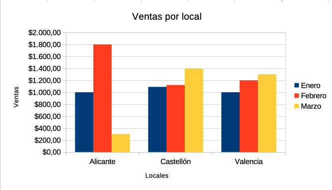
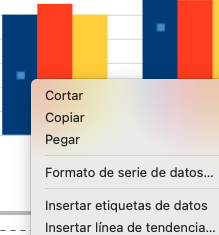
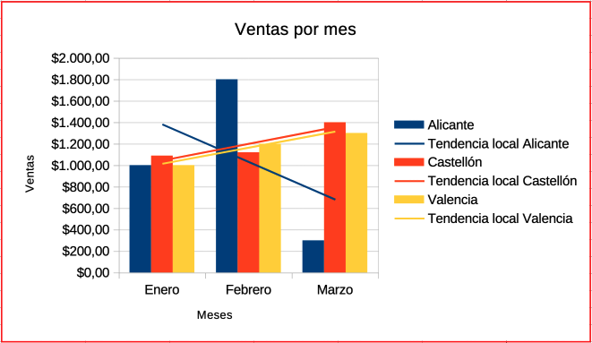
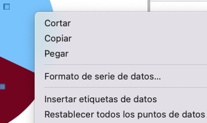
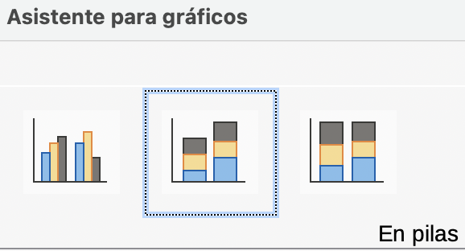

Guía 1114: Diagramas¶
|
|

Exploración Estructuración Actividad práctica Transferencia
Temática: Representación gráfica de datos y análisis de información mediante la creación y edición de diagramas en LibreOffice Calc.
Objetivo de aprendizaje: Construcción, configuración y análisis de diversos tipos de diagramas en LibreOffice Calc, permitiendo la representación clara y eficaz de los datos contenidos en una hoja de cálculo.
Componente: Uso y apropiación de la T&I.
Competencia: Genero propuestas innovadoras para el uso y aprovechamiento de productos tecnológicos.
Evidencia de aprendizaje: Utilizo adecuadamente herramientas informáticas para la búsqueda, organización, procesamiento, sistematización, comunicación y difusión de ideas.
Actividades desarrolladas en su totalidad.
Participación en clase.
Explicación clara de conceptos.
Argumentación de ideas.
Cumplimiento de las reglas del aula.
Mensaje del autor¶
“Esta guía ha sido diseñada para facilitar el aprendizaje práctico y efectivo en la creación y análisis de diagramas en LibreOffice Calc, con el fin de que los estudiantes desarrollen habilidades claras y precisas para representar y comprender datos de manera visual y funcional”.
—Camilo Fonseca
Diagramas en LibreOffice Calc¶
Los diagramas permiten representar clara y eficaz los datos de una hoja de cálculo, de forma que se puedan comprender de un rápido vistazo.
En el mundo de los negocios y en otros ámbitos sociales y económicos, es frecuente que la presentación de los resultados obtenidos en un determinado proceso, se realice ayudándonos de éstos.
Para construir un diagrama se necesita disponer previamente de una tabla de datos. De hecho, los diagramas están enlazados de forma dinámica con los datos, de forma tal que cualquier modificación en los datos se reflejarán automáticamente en el gráfico.
En LibreOffice Calc es preferible que esa tabla (o rango) de datos posea títulos de cabecera en la primera fila y en la primera columna. Es recomendable utilizar títulos tan explícitos como sea necesario y tan cortos como sea posible.
Si los encabezamientos (rótulos o etiquetas) deseados no son contiguos a los datos, podemos bien copiarlos previamente en una nueva tabla, o utilizar la tecla CTRL para seleccionar rangos de celdas no contiguos.
Hay que evitar insertar filas o columnas en blanco entre los datos, pues también se representarán en el gráfico, y posiblemente no sea lo que pretendemos. También se pueden usar tablas sin etiquetas, pero después es algo más complicado añadirlas.
Tipos de diagramas¶
Libre OfficeCalc dispone de diez distintos tipos de diagramas (nombrados también como gráficas, dependiendo de la versión de LibreOffice).

Tipos de diagramas¶ |
Cada tipo dispone a su vez de varios subtipos, según elijamos el modo normal, en pilas, porcentaje apilado, 3D…
Los diagramas tipo Línea y Dispersión admiten también el subtipo Líneas suaves. En total más de 50 sub-tipos de diagramas.
Los diagramas en 3D admiten también dos distintos tipos de acabados: simple y realista.
Los diagramas 3D en columna y en barra permiten elegir cuatro formas básicas para el dibujo de los puntos de datos: Barra, Cilindro, Cono y Pirámide.
Todas estas posibles variaciones ponen a nuestra disposición más de 125 variaciones posibles para representar nuestros datos gráficamente.
Pasos para construir un diagrama¶
Seleccionar los datos de una tabla. Ignorar las celdas que tengan totales.
Elegir el tipo de diagrama a generar (existe un total de 10 tipos de diagramas a escoger)
Seleccionar las series de datos (columnas o filas) del diagrama.
Configurar que elementos tendrá el diagrama (título, leyendas, etc.)
A00: Introducción (5%)¶
Exploración
Transcriba en su cuaderno el objetivo, las orientaciones curriculares y los criterios de evaluación de la presente guía.
Lea el mensaje del autor y responda la siguiente pregunta:
¿Para usted que significa la frase: “Una imagen vale más que mil palabras”?
A01: Taller (5%)¶
Estructuración
En su cuaderno responda las siguientes preguntas:
¿Para que sirven los diagramas en LibreOffice Calc?
¿Que significa que un diagrama esté enlazado de forma dinámica con los datos?
¿Qué problemas habrían si se insertan filas o columnas en blanco entre los datos?
¿Cuales son los pasos para construir un diagrama?
En su cuaderno describa y dibuje cada uno de los tipos de diagramas que se pueden trabajar en LibreOffice Calc.
A02: Construcción de diagramas 103 (10%)¶
Actividad práctica
DESCARGUE el siguiente archivo y GUÁRDELO en la carpeta de evidencias del periodo actual:
A1114A02-diagrama.ods Descargar
ABRA el archivo A1114A02-diagrama.ods y SELECCIONE el rango de celdas B2:E5 (se ignoran las celdas de los totales porque no se recomiendan que estén en un diagrama) y luego en la barra de herramientas estándar PULSAR el botón Insertar gráfico.
En la ventana: Asistente para gráficos, configure las siguientes opciones:
Tipo de gráfico
Seleccionar Columna
PULSAR el botón Siguiente >
Intervalo de datos
Marcar la opción: Series de datos en columnas
¿Qué es una serie de datos?
En un diagrama, una serie de datos son los datos de cada columna (en este caso, las columnas: Enero, Febrero y Marzo).
En un diagrama, una serie de datos, también pueden ser los datos de cada fila (en este caso, las filas: Alicante, Castellón y Valencia).
Se puede elegir una serie de datos tipo fila o columna pero nunca las dos al mismo tiempo.
Marcar la opción: Primera fila como etiqueta
Marcar la opción: Primera columna como etiqueta
PULSAR el botón Siguiente >
Series de datos
PULSAR el botón Siguiente >
Elementos del gráfico
Título: Ventas por mes
Eje X: Locales
Eje Y: Ventas
PULSAR el botón Finalizar
El diagrama generado debería tener la siguiente forma:

Ventas por local¶
PULSE una vez clic sobre el diagrama y luego PULSE el botón Propiedades de la barra de herramientas lateral y configurar lo siguiente:
Propiedades
Línea
Línea: Continuo
Grosor: 1,0 pt
Color: Rojo
Posición
Posición X: 2,25 cm
Posición Y: 3,16 cm
Anchura: 15,77 cm
Altura: 9,00 cm
En su cuaderno…
Realice una análisis del diagrama (Ventas por local) teniendo en cuenta las siguientes preguntas:
Por cada local, ¿En qué mes hubo más y menos ventas?
¿Cuál fue el mes que tuvo más ventas y a que local pertenece?
¿Cuál fue el mes que tuvo menos ventas y a que local pertenece?
GUARDE los cambios.
REALICE una copia del diagrama Ventas por local y pegarlo en la celda B29.
PULSAR doble clic sobre la copia del diagrama y VERIFICAR que en la parte superior se active la barra de herramientas de diagramas:
Cuando se activa la barra de herramientas de diagramas, esto significa LibreOffice Calc está en modo edición de gráficos de diagramas.
Modo edición gráficos de diagramas
El modo edición de gráficos de diagramas, permite editar los gráficos internos del diagrama.
Para activarlo es necesario PULSAR doble clic sobre el diagrama.
Modo edición propiedades de diagramas
El modo edición de propiedades de diagramas, permite editar el diagrama pero no sus gráficos internos.
Para activarlo es necesario PULSAR sola una vez clic sobre el diagrama.
En la barra de herramientas de diagramas, PULSAR el botón Intervalos de datos…
En la ventana: Intervalos de datos, en la pestaña Intervalo de datos, SELECCIONAR la opción: Series de datos en filas y luego PULSAR el botón Aceptar
En su cuaderno…
Responda las siguientes preguntas:
¿Qué acabó de pasar con el diagrama?
¿Cuál es la diferencia con el diagrama original?
Al diagrama que acabó de modificar, nuevamente volver a la barra de herramientas de diagramas y PULSAR el botón Títulos:
En la ventana Títulos configurar:
Título: Ventas por meses
Ejes
Eje X: Meses
PULSAR el botón Aceptar
En modo edición de diagramas, SELECCIONE la primera barra azul del diagrama y ABRIR el menú contextual sobre la barra (PULSAR botón derecho del mouse). Luego SELECCIONAR la opción: Insertar línea de tendencia…

Insertar línea de tendencia…¶
En la ventana: Línea de tendencia para la serie de datos <<>>, configurar:
Pestaña Tipo:
Tipo de regresión
SELECCIONAR Lineal
Opciones
Nombre de línea de tendencia: Tendencia local Alicante
Pestaña Línea:
Grosor: 0,05 cm
Pulsar el botón Aceptar
Usted acaba de generar una línea de tendencia muy útil para análisis de diagramas. GENERE las líneas de tendencia para los locales: Castellón y Valencia. El diagrama debería quedar así:

Ventas por mes¶
En su cuaderno…
Realice un análisis del diagrama Ventas por mes y responda las siguientes preguntas:
¿Qué local con el tiempo, tuvo mejores ventas y por que?
¿Qué local con el tiempo, tuvo menores ventas y por que?
Por cada local, ¿En qué mes hubo más y menos ventas?
Si tuviese que cerrar uno de los locales, ¿Cuál cerraría y por qué?
GUARDE los cambios y CIERRE el software LibreOffice Calc.
{kind=link}
{kind=link}
{kind=link}
{kind=link}
A03: Creación de diagramas 102 (10%)¶
Actividad práctica
DESCARGUE el siguiente archivo y GUÁRDELO en la carpeta de evidencias del periodo actual:
A1114A03-ventas-semestre-calculadas.ods Descargar
ABRA el archivo A1114A03-ventas-semestre-calculadas.ods y CREE un diagrama que represente los totales de ventas por mes, para esto SELECCIONE el rango celdas: A3:A9 y el rango de celdas: D3:D9
Recordar…
Recordar que para seleccionar al mismo tiempo dos rangos de celdas separados, mantener presionada la tecla CTRL
El diagrama debe tener las siguientes características:
Tipo de gráfico: Circulo normal
Intervalo de datos: Series de datos en columnas
Elementos del gráfico:
Título: Ventas 1er semestre por mes
Leyenda: Abajo
Una vez generado el diagrama, PULSAR doble clic sobre el diagrama y GENERAR el menú contextual sobre cualquiera de las divisiones del círculo. Luego SELECCIONAR la opción: Insertar etiquetas de datos

Insertar etiquetas de datos…¶
El diagrama generado debería quedar así:
En su cuaderno…
Realice un análisis del diagrama y responda las siguientes preguntas:
¿Qué mes tuvo mayores ventas y por qué?
¿Qué mes tuvo menores ventas y por qué?
Guarde los cambios.
CREAR un diagrama que represente la comparación de las ventas de los dos productos. Para esto SELECCIONE el rango de celdas: A3:C9. El diagrama debe tener las siguientes características:
Tipo de gráfico: Columna normal, Aspecto 3D: Sencillo, Cilindro
Intervalo de datos: Series de datos en Columnas
Series de datos: Ordenar para que aparezca Producto 2 como primera serie
Elementos de gráfico:
Título: Ventas mensuales por producto
Leyenda: Arriba
Título Eje X: Meses
Título Eje Y: Millones de pesos
Insertar etiquetas de datos para el Producto 1 y el Producto 2.
El diagrama generado debería quedar así:
En su cuaderno…
Realice un análisis del diagrama generado y responda las siguientes preguntas:
¿Qué producto tuvo las mayores ventas y en que mes fue?
¿Qué producto tuvo las menores ventas y en que mes fue?
¿Qué producto con el tiempo tuvo mejores ventas y por qué?
¿Qué producto con el tiempo tuvo menores ventas y por qué?
Si usted tuviese que invertir en alguno de los dos productos, ¿En cuál invertiría y por qué?
Guarde los cambios.
CREAR un diagrama que represente las ventas semestrales del producto 2. Para esto SELECCIONE el rango de celdas: A3:A9 y el rango de celdas: C3:C9. El diagrama debe tener las siguientes características:
Tipo de gráfico: Barra normal, Aspecto 3D: Realista
Intervalo de datos: Series de datos en columnas
Elementos del gráfico:
Sin leyenda
Título: Ventas semestrales Producto 2
No mostrar cuadrículas en ningún eje
Insertar etiquetas de datos para el Producto 2
El diagrama generado debería quedar así:
GUARDE los cambios y CIERRE el software LibreOffice Calc.
{kind=link}
{kind=link}
{kind=link}
{kind=link}
{kind=link}
A04: Edición de diagramas 203 (10%)¶
Actividad práctica
DESCARGUE el siguiente archivo y GUÁRDELO en la carpeta de evidencias del periodo actual:
G1114A04-ventas-semestre-calculadas.ods Descargar
ABRA el archivo G1114A04-ventas-semestre-calculadas.ods y en la barra de herramientas estándar, PULSAR el botón: Alternar previsualización de impresión.
Edite el estilo de página Predeterminado para que no muestre la cabecera. Para esto desmarque la opción: Activar cabecera, en la pestaña Cabecera de la ventana: Estilo de página: Predeterminado
Advertencia
Si no recuerda como modificar el estilo de página, revise la actividades de la guía correspondiente.
En la barra de herramientas estándar, PULSE el botón: Exportar directamente a PDF y GUARDE el archivo: G1114A04-ventas-semestre-calculadas.pdf, en la carpeta de evidencias del periodo actual.
Nuevamente, en la barra de herramientas estándar, PULSAR el botón: Alternar previsualización de impresión, para volver a la interfaz normal de LibreOffice Calc.
En el menú superior, PULSAR Ver > Salto de página
En modo edición de gráficos de diagrama, personalizar el diagrama (Ventas 1er semestre por mes) de la siguiente manera:
En la barra de herramientas lateral, PULSAR el botón Propiedades. Configurar así:
Elementos
Leyenda
Desmarcar la opción, Mostrar leyenda.
Área
Relleno: Color: Gris claro 4
Línea
Línea: Continuo
Grosor: 0,5 pt
Color: Rojo
En el título (Ventas 1er semestre por mes), GENERAR un menú contextual y SELECCIONAR la opción: Formato de título…
En la Ventana Título principal, configurar así:
Pestaña Bordes
Estilo: Continuo
Color: Gris oscuro 1
Grosor: 0,05 cm
PULSAR el botón Aceptar
En las etiquetas de datos, GENERAR un menú contextual y SELECCIONAR la opción: Formato de etiquetas de datos…
En la Ventana Etiquetas de datos para la serie de datos, configurar así:
Pestaña Etiquetas de datos
Atributos de texto
Solo marcar: Valor como porcentaje y Categoría
PULSAR el botón Aceptar
El diagrama generado debería tener la siguiente apariencia:
En su cuaderno…
Compare el diagrama anterior (Vea el archivo PDF generado al principio) con el diagrama recién modificado y en su cuaderno escriba las diferencias.
Guarde los cambios.
En modo edición de gráficos de diagrama, personalizar el diagrama (Ventas mensuales por producto) de la siguiente manera:
Leyenda (ubicada en barra de herramientas lateral)
Mostrar leyenda: Inferior
Ejes (ubicada en barra de herramientas lateral)
Desmarcar la opción: Título del eje X
Línea (ubicada en la barra de herramientas lateral)
Línea: Continua
Grosor: 0,5 pt
Color: Rojo
Eje Y (Menú contextual sobre la escala en el Eje Y, SELECCIONAR la opción Formato de eje…)
Pestaña Escala
Intervalo principal: 75
PULSAR el botón Aceptar
El diagrama debería tener la siguiente apariencia:
En su cuaderno…
Compare el diagrama anterior (Vea el archivo PDF generado al principio) con el diagrama recién modificado y en su cuaderno escriba las diferencias.
Guarde los cambios.
En modo edición de gráficos de diagrama, personalizar el diagrama (Ventas semestrales Producto 2) de la siguiente manera:
Tipo de gráfico: Desactivar Aspecto 3D (barra de herramientas lateral)
Área (ubicada en barra de herramientas lateral)
Transparencia: Sólido al 100%
Línea (ubicada en barra de herramientas lateral)
Línea: Continua
Grosor: 0,5 pt
Color: Rojo
Series de datos (Menú contextual sobre las barras horizontales, SELECCIONAR la opción Formato de Series de datos)
Pestaña Área
Color: Ladrillo
PULSAR el botón Aceptar
El diagrama debería tener la siguiente apariencia:
En su cuaderno…
Compare el diagrama anterior (Vea el archivo PDF generado al principio) con el diagrama recién modificado y en su cuaderno escriba las diferencias.
GUARDE los cambios y CIERRE el software LibreOffice Calc.
{kind=link}
{kind=link}
{kind=link}
{kind=link}
A05: Creación de diagramas para análisis financiero simple 102 (10%)¶
Actividad práctica
DESCARGUE el siguiente archivo y GUÁRDELO en la carpeta de evidencias del periodo actual:
G1114A05-cuenta-resultados.ods Descargar
ABRA el archivo G1114A05-cuenta-resultados.ods, observe su contenido y SELECCIONE todas la celdas que contengan números y APLIQUE un formato de moneda: COP $ español Colombia.
En su cuaderno…
Responda las siguientes preguntas:
¿En que meses hubieron perdidas y cuál fue el valor de la perdida de cada mes?
¿De cuánto fue el total de las perdidas y por qué se consideran perdidas?
CREAR un diagrama que compare el ACUMULADO DEL TOTAL DE GASTOS con los BENEFICIOS de los meses JUNIO y DICIEMBRE. El diagrama debe tener las siguientes características:
A28: Porque en esta celda nos muestra el TOTAL GASTOS
A30: Porque en esta celda nos muestra los BENEFICIOS
G18: Porque en esta celda nos muestra el MES de JUNIO
M18: Porque en esta celda nos muestra el MES de DICIEMBRE
G28, M28, G30, M30: Porque en estas celdas están los valores monetarios.
El tipo de diagrama debe ser: Columna en PILAS

Diagrama Columna en PILAS¶
Intervalo de datos: Es Series de datos en filas, porque se van comparar los ACUMULADOS DE TOTAL DE GASTOS CON LOS BENEFICIOS
Las series de datos: El orden debe ser primero BENEFICIOS y luego GASTOS porque los BENEFICIOS son de menor cuantía.
El título del diagrama debe ser: ACUMULADOS TOTAL DE GASTOS VS BENEFICIOS
GENERE el diagrama y adicione etiquetas de datos a las barras. El formato de etiquetas de datos debe ser letra de color blanco. Para las barras que representan los BENEFICIOS, el tamaño de la letra debe ser 8.
Advertencia
Recuerde que para insertar etiquetas de datos y editar su formato, debe ser por medio del menú contextual. Estas configuraciones se hace en modo EDICIÓN DE GRÁFICOS DE DIAGRAMAS.
El diagrama generado debe tener la siguiente apariencia:
Guarde los cambios.
CREAR un diagrama Lineal de puntos y líneas, que compare la evolución en todo el año (desde Enero a Diciembre), del TOTAL DE INGRESOS PARCIALES MENSUALES y el TOTAL DE GASTOS PARCIALES MENSUALES. Tenga en cuenta las siguientes características:
DEBIDO a que la tabla tiene bastante información, es necesario solo seleccionar ciertas CELDAS CONCRETAS. En este caso SELECCIONE las celdas correspondientes.
El tipo de gráfico es: Línea: Puntos y Líneas
Intervalo de datos: Es Series de datos en filas, porque se van comparar el TOTAL DE INGRESOS PARCIALES MENSUALES con el TOTAL DE GASTOS PARCIALES MENSUALES.
Elementos del gráficos:
El título del diagrama debe ser: TOTAL DE INGRESOS Y GASTOS PARCIALES MENSUALES.
La leyenda debe ser mostrada en la parte inferior.
El diagrama generado debe tener la siguiente apariencia:
En su cuaderno…
Realice un análisis del diagrama generado, tenga en cuenta las siguientes preguntas:
¿Qué meses los INGRESOS fueron mayores que los GASTOS?
¿Qué meses los GASTOS fueron mayores que los INGRESOS?
¿Qué mes los gastos fueron mayores y que mes los gastos fueron menores?
¿Qué mes los ingresos fueron mayores y que mes los ingresos fueron menores?
¿A la empresa le fue bien o le fue mal y por qué?
Guarde los cambios.
CREAR un diagrama circular, que muestre la distribución por conceptos de los INGRESOS TOTALES EN EL AÑO. Tenga en cuenta las siguientes características:
DEBIDO a que la tabla tiene bastante información, es necesario solo seleccionar ciertas CELDAS CONCRETAS. En este caso SELECCIONE el rango de celdas: A18:M21
El tipo de gráfico es: Circular
Intervalo de datos: Series de datos en Columnas
Elementos del gráfico:
Título del gráfico: INGRESOS TOTALES EN EL AÑO
Desmarcar la opción: Mostrar leyenda
Genere un menú contextual sobre el gráfico circular y SELECCIONE la opción: Insertar etiquetas de datos
Nuevamente genere un menú contextual sobre el gráfico circular y SELECCIONE la opción: Formato de etiquetas de datos…
En la ventana: Etiquetas de datos para la serie de datos <<>>, configurar lo siguiente:
Pestaña Etiquetas de datos:
Atributos de texto
Marcar las opciones: Valor como porcentaje y Categoría
Opciones de atributos
Posicionamiento: Fuera
PULSAR el botón Aceptar
El diagrama generado debería tener la siguiente apariencia:
Organice los diagramas de tal forma que en la previsualización de la impresión, cada diagrama tenga asignado una hoja.
GUARDE los cambios y CIERRE el software LibreOffice Calc.
{kind=link}
{kind=link}
{kind=link}
{kind=link}
{kind=link}
A06: Presentación de evidencias (50%)¶
Transferencia
¿Cómo se evalúa?
Los estudiantes presentan lo siguiente:
Carpeta de evidencias con todos los archivos editados en la presente guía. (Los archivos deben estar abiertos).
Cuaderno con las actividades desarrolladas.
El docente realiza unas preguntas para verificación de conocimientos.
El estudiante debe demostrar de forma práctica sus conocimientos en el uso de LibreOffice Calc.